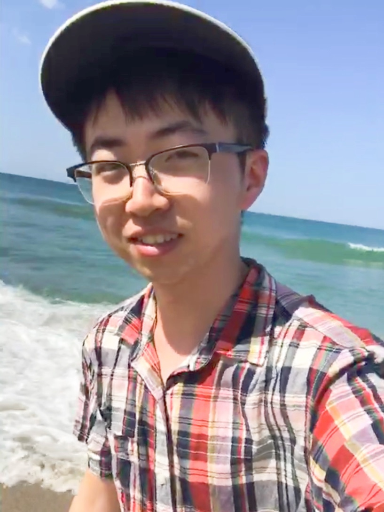

Huihuang JiaMaster of Science
Center for Translation Studies |
 |
Huihuang Jia is a postgraduate student from University College London at the Center for Translation Studies (CenTraS). While studying at UCL, he is elected as the Postgraduate Student Academic Representative. Prior to UCL, Huihuang graduated summa cum laude from the School of Foreign Languages at Yancheng Teachers University. Before joining UCL, he was a visiting student at Duke University and Peking University. His professional experiences also include United Nations International Maritime Organization (IMO), China Translation Corporation, and Chinese Embassy in the United Kingdom. Huihuang is 24 years old and from China.
Audiovisual translation with a focus on eye tracking and EEG studies on subtitling, literary translation, and critical discourse analysis.
Huihuang Jia. 2020. “A Characterization of Qingwen and Its Transference in Translating Hongloumeng into English ―Based on David Hawkes’ and Yang Xianyi’s Versions”, in Jacob A. Haskell and Hao Bo (eds). The Proceedings of The 2020 Northeast Asia International Symposium on Linguistics, Literature and Teaching. Las Vegas: New Version Press. Forthcoming (Indexed in CPCI/ ISTP, CKNI, CHAOXING).
Huihuang Jia and Shengli Chen. 2019. “A Review on the Granted Programs of the Translation Project of the Chinese Humanities and Social Sciences Academic Boutique (2010-2018)”, in Jacob A. Haskell and Hao Bo (eds). The Proceedings of The 2019 Northeast Asia International Symposium on Linguistics, Literature and Teaching. Las Vegas: New Version Press, 249-257. DOI:10.26914/c.cnkihy.2019.035566 (Indexed in CPCI/ ISTP, CKNI, CHAOXING).
Institute of Translators and Interpreters (00018600), UK
Chartered Institute of linguistics (57213), UK
Translators Association of China (X190242), China
Jiangsu Science and Technology Translators Association(2019003), China
Cultivated by “10000 Talents Program” of Undergraduates in Jiangsu Province, China, 2018-2019
First Prize of Academic Scholarship, Yancheng Teachers university, 2019
Outstanding Undergraduate, Yancheng Teachers University, 2019
Outstanding Student Leader, Yancheng Teachers university, 2019
Jiangsu Provincial Government Scholarship of Overseas Studies, Jiangsu Provincial Department of Education, 2018
First Prize of The 4th “LSCAT Cup” Translation Contest, Translators Association of China, 2018
Third Prize of The 7th National Interpreting Contest, Translators Association of China, 2018
Third Prize of The “ FLTRP Cup” National Universities English Public Speaking Contest, FLTRP, 2017
Languages: Chinese (native), English (PTE75, near native), French (beginner)
Cognitive tool (Eye Tracker, Electroencephalography |EEG)
Subtitling software (OOONA, Wincaps Q4)
Translation technology (SDL Trados Studio, memoQ, Wordfast Anywhere)
Data Analysis Software (SPSS)
MS Office (Word / Excel / PowerPoint / Outlook)